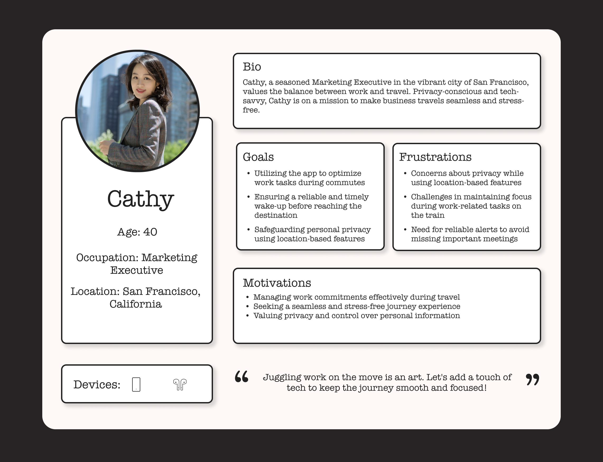
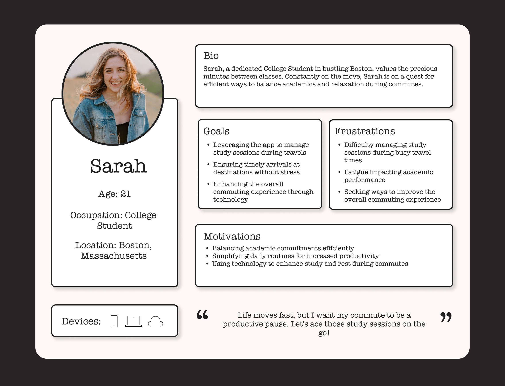
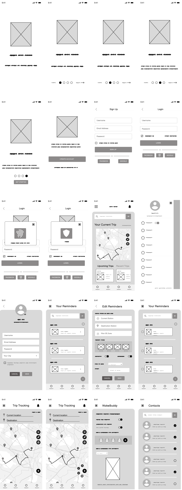
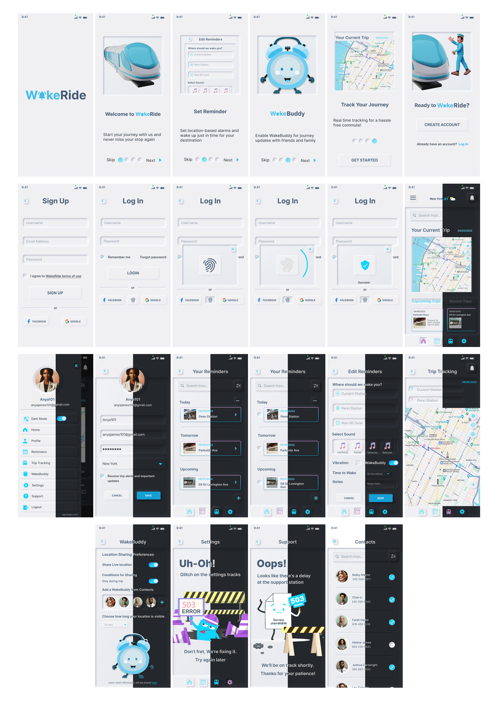

Case Study
WakeRide
WakeRide Mobile App is a self-initiated UX project I sourced fromuxchallenge.coto enhance my UI/UX skills. Its focus is to enhance the transportation experience for train passengers.
role
- UX Research
- UI Design
team
- Self-Directed
duration
- Summer-Fall 2023
- (11 weeks)
Design challenge
Wake up, this is your stop. Have you ever tried to take a short nap on the train only to wake up and find yourself at the end of the line? How can you help passengers wake up just before the train arrives at their station?
Problem
Many passengers experience the inconvenience of falling asleep during their train journey and waking up at the end of the line, far from their intended destination. This not only wastes their time but also creates anxiety and stress. The challenge was to design an app that uses technology to wake passengers up at the right time, ensuring a smooth and stress-free journey.
Market Analysis

User Research Insights
•Common Problem: Passengers frequently miss stations due to sleep-related issues.
•Preferred Wake-up Method: Most passengers indicated a preference for a smartphone app that alerts them before reaching their station.
•Anxiety Reduction: Passengers seek a solution to reduce stress and enhance relaxation during their journey.
•Desire for Background Functionality: Users expressed the need for an app that operates in the background, ensuring the alarm sounds even while they're engaged with music or movies on their phone.
•GPS Alarm Clock Functionality: The alarm is location-based rather than time-based, addressing concerns about potential delays due to traffic or other factors at specific stops.

Background functionality feature
User Personas
User Personas
Solution: App Features
•Station Tracking:The app tracks the train's location in real time.
•Customizable Alerts:Users can set their alert preferences, such as how many minutes before their station they want to be notified.
•Wake-Up Methods:The app offers two types of wake-up methods: vibration and sound from their phone's library.
•Opt-In features, WakeBuddy:Allow friends to track the user’s journey in real-time and ensure they've gotten off at the right stop. Users also have full control over how long they share their location.
Solution: Design
User Flow

Low-Fidelity Wireframe
Style Guide
•Background color:I chose a balanced combination of neutral tones for the background (#F0F0F3 and #EEEEEE) allowing for clarity and readability. Headings (#455B74) and body text (#242E33 with 85% opacity) were used to provide a touch of sophistication.
•Accent color:I used #11D6FB, a light shade of blue, since blue tones generally convey a sense of calmness, trustworthiness, and reliability. These qualities align well with the goal of ensuring an stress-free journey, making users feel secure and at ease while using the app.
•Additional accent colors:A gradient color designed with #B962EC (medium-purple), #C490CE (Amethyst), and #F68DAB (pink) were strategically integrated to add vibrancy and foster a visually engaging experience.
•Neumorphism Style:My choice of UI design style is neumorphism because it delivers a tactile and intuitive experience. Also, the soft shadows and subtle highlights not only add a sense of realism and responsiveness but also enhance user engagement.
High-Fidelity Wireframe
•Onboarding: The onboarding process elucidates WakeRide's purpose and core features—Set Reminder, WakeBuddy, Track Your Journey—guiding users seamlessly through the app's functionality.
•Diverse Login Options: The three login methods—passwordless (fingerprint), social media and regular login were chosen for inclusivity and user preferences. The default 'remember me' setting optimizes user convenience, streamlining the login process.
•Error Pages and Friendly Communication:Introducing informative error pages, like the "503 Service Unavailable," communicates transparency and reliability to users during occasional glitches, ensuring they stay informed and patient. Equally important is displaying error messages in a positive tone to minimize user frustration during unexpected situations, and assure them that the issues are being addressed.
•Bottom Navigation:Employing a bottom navigation approach enhances accessibility, allowing users to navigate seamlessly with one hand, optimizing the mobile experience.
•'More' Button on Trip Tracking Screen:The ‘more' button on the Trip Tracking screen was designed as a two-step process for a layer of caution to prevent accidental interactions, like canceling or pausing journeys.
•Real-time Tracker:Prototyping a real-time tracker visually maps the user's journey, and addresses the core problem statement by allowing fatigued users, prone to missing stops, to actively witness their progress. This, along with the location-based alarm, provides constant reassurance, addressing the core problem statement by significantly reducing the likelihood of oversleeping.
Interactive Prototype
This video tour displays the interactivity I implemented
into my high-fidelity wireframe. Alternatively, you can
explore thelive prototype.Note:The live location
marker on the trip tracking screen is intentionally sped
up in this video presentation for time efficiency.